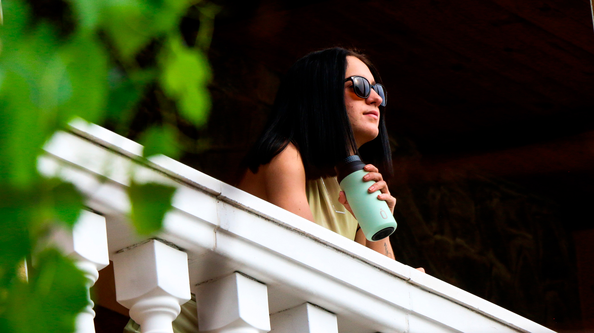
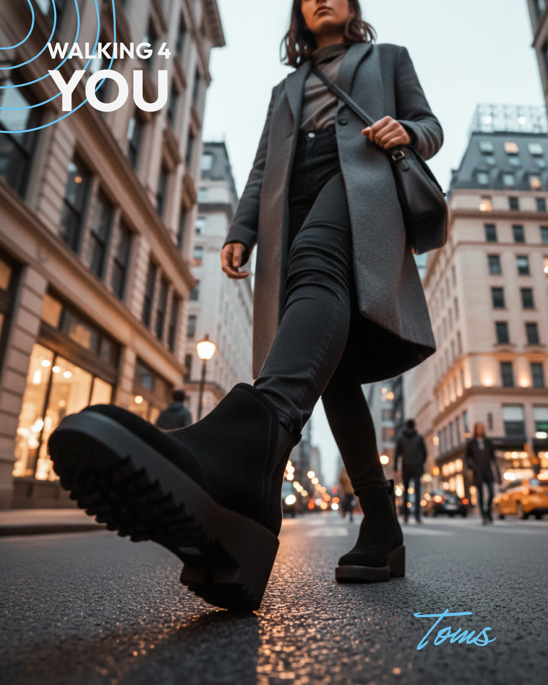
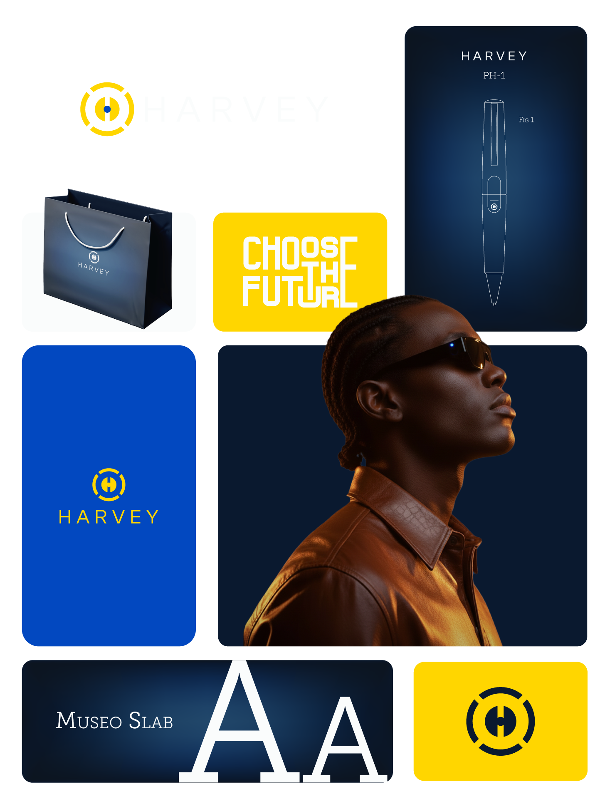
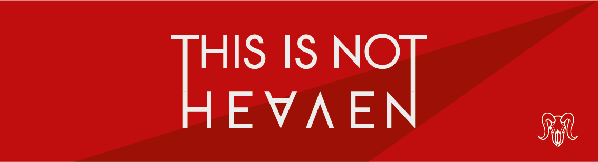

Runbott
Brand & Visual Design
Gestión de identidad visual, contenido y comunicación de marca.
Ver proyecto
Diables de Cànoves
Identity & Cultural Branding
Creación de identidad visual, sistema gráfico y aplicaciones para una asociación cultural catalana.
Ver proyecto
Toms
Rebranding & Brand Strategy
Replanteamiento estratégico e identidad visual para una nueva dirección de marca contemporánea.
Ver proyectoHearvey
Brand Identity & Visual System
Desarrollo completo de una marca desde concepto, naming, identidad visual y sistema gráfico.
Ver proyecto

Shaidans
Visual Identity & Typeface System
Desarrollo de identidad visual, sistema gráfico y tipografía personalizada para una marca conceptual de e-sports.
Ver proyecto